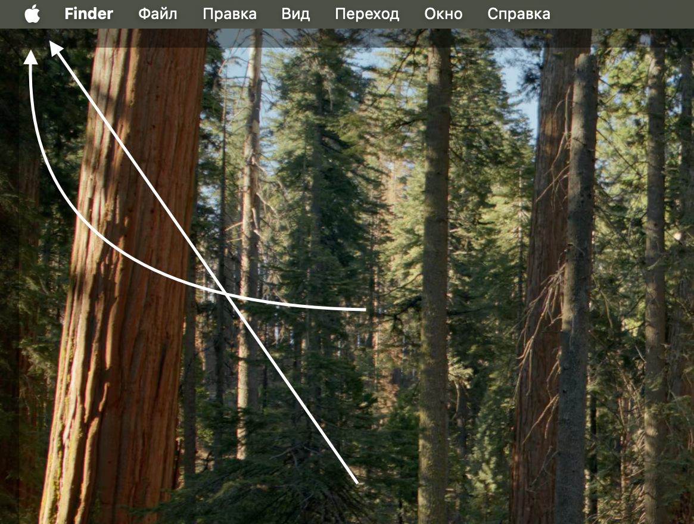

Этот раздел создан для тех, кто только начал знакомство с macOS или хочет освежить свои знания. Здесь собраны решения для проблем, которые часто раздражают новичков.
Первым делом рекомендуется выключить автоматические обновления, чтобы система не обновлялась без вашего ведома.
Нажмите на логотип Apple в верхнем левом углу экрана:
В открывшемся меню выберите пункт "Системные настройки":
В Системных настройках:
Отключите следующие опции:
Незаменимая программа, которая исправляет поведение колесика мыши в macOS. По умолчанию прокрутка в macOS инвертирована, и MOS позволяет сделать её привычной для пользователей Windows.
Официальный сайт MOSАрхиватор как 7zip с windows он нужен так как mac os может неподдежвивать некоторые архивы
Официальный сайт keka(бесплатно) AppStore keka (499 рублей)Незаменимая программа vs code в предстовеление не нуждается
Официальный сайт vscodeу меня gcc не работал без apple xcode если вы планируете его испльзовать то надо скачать и еще в терминале написать gcc и согласится чтобы скачать
appstore XcodeИ последняя программа она необезательная лучше посмотрите как ей пользоваться в интернете на делает как на windows "трей" где можно скрыть вкладки чтобы верхее меню было более свободное
Официальный Github DozerСначала попробуйте стандартный способ удаления:
Если стандартный способ не сработал:
/Library/Audio/Plug-Ins/HALJumpAudio.driver)После перезагрузки проверьте настройки звука — удалённое устройство не должно отображаться.
Если устройство снова появляется:
~/Library/Caches и /Library/Caches